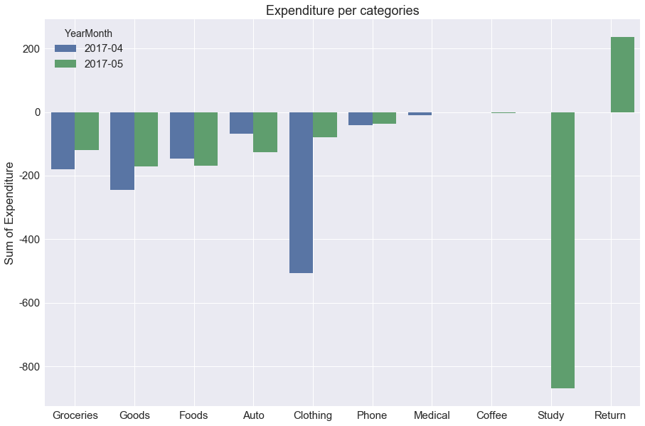

KYUNG MO KWEON
Table of Contents
- 1. Machine Learning
- 2. Self Driving Car
- 3. Web
- 4. Android/iOS
- 5. Utils
1 Machine Learning
1.1 American Sign Language Recognition with HMM

1.1.1 Overview
- Convert Sign Langauge to English words
- Achieved the WER(Word Error Rate) of 43.8%
- Used Plain Hidden Markov Models and Ensembles
1.1.2 Link
- GitHub: link
1.2 Reinforcement Learning

1.3 Spending Visualization

1.3.1 Overview
- Used random forest to categorize my monthly expenditures
- Visualized monthly spending in comparison to the previous month
1.3.2 Link
- GitHub: link
2 Self Driving Car
2.1 Vehicle Detection

2.1.1 Overview
- Segmented vehicles on a picture or a video frame with the IOU (Intersection of Union) of ~80%
- Implemented the Convolutional Networks for Image Segmentation (U-Net) from scratch
2.1.2 Link
2.2 Path Planning

2.2.1 Overview
- Generates a path plan that can drive on the highway
- Implemented an efficient(lane change if necessary) and safe trajectory
2.2.2 Link
2.3 Vehicle Control with a Model Predictive Controller

2.3.1 Overview
- Successfully drove vehicles autonomously, maintaining high-speed of over 70+ mph
- Implemented a model predictive controller in the simulator
- Used C++ and WebSocket to communicate with the simulator
2.3.2 Link
- GitHub: link
2.4 Vehicle Localization using Unscented Kalman Filter

2.4.1 Overview
- Localized the vehicle in the simulator with the root mean squared error (RMSE) of ~0.1
- Implemented Unscented Kalman Filter in C++
- Used googletest to follow the Test Driven Development (TDD)
2.4.2 Link
- GitHub: link
2.5 Traffic Sign Recognition

2.5.1 Overview
- Used the multiple layers of Convolution Neural Network(CNN) in Keras
- Used image augmentation tricks such as color shift, rotation, and zooming.
- Achieved 98.01% accuracy on the test data
2.5.2 Link
- GitHub: link
2.6 Finding Driving Lanes

2.6.1 Overview
- Used OpenCV to detect driving lanes on the road
- Used canny edge detection and color thresholding
- Written in Python
2.6.2 Link
- Jupyter Notebook: link
3 Web

3.2 Mango Commerce

3.2.1 Overview
- Fruits/Vegetable Marketplace Demo
- Admin users can create an order using a custom chatbot
- Used Elixir, Phoenix, Bootstrap, WebSocket, ES6
3.3 PR-12
3.3.1 Overview
PR-12 is the reading/study group organized in Tensorflow KR Facebook Group. The objective is to read/discuss deep learning papers every week hosted in Awesome Deep Learning Papers.
3.4 Hue Control Dashboard

3.4.1 Overview
- Control smart home plugs such as Phillips Hue and TP Link smart plugs
- Used Ajax, Webpack, Elm, ES6, CSS
3.4.2 Link
3.5 Nato Phonetic Convert
3.5.1 Overview
- Convert English Sentence to Nato Phonetic Words
For example,
M ⟼ Mike O ⟼ Oscar K ⟼ Kilo W ⟼ Whiskey E ⟼ Echo O ⟼ Oscar N ⟼ November
- Used Elm, CSS
3.6 Kaggle Clone

3.6.1 Overview
- Kaggle is a competition website for data scientist
- This is a clone version of Kaggle using Django, Postgres
3.7 Price Alert

3.7.1 Overview
- Users can set up a price alert with the target price
- Users will get an alert if the price goes down to the target price
- Flask and MongoDB were used
3.8 Question Asking Platform for Conference/Seminar

3.8.1 Overview
- Users can write/upvote/downvote a question
- Sync real-time using websockets
- Written in Elm
3.8.2 Link
3.9 Simple Weather Ajax in Angular.js (v1)

3.9.1 Overview
- Used the
openweathermap.orgAPI service to query a weather of a city - Angular.js(v1)
3.10 Blog REST API
3.10.1 Overview
- Implemented RESTful Blog service through Django Rest Framework
3.10.2 Link
4 Android/iOS
4.1 Employee Manager App

4.2 Overview
As a manager, I want to
- add an employee
- delete an employee
- text an employee the work shift
- edit the employee information
4.3 Link
5 Utils
5.1 sh2md
5.1.1 Overview
Record your shell session and produce in the markdown format

5.1.2 Link

5.3 CSS Autoprefix Plugin for Emacs
5.3.1 Overview
Turn this code
div { display: flex; }
into
div { display: -webkit-box; display: -ms-flexbox; display: flex; }
5.3.2 Link
5.4 gbrowse
5.4.1 Overview
Open any git repository file in the browser in GitHub Respository
gbrowse # open current branch in GitHub (e.g., https://github.com/kkweon/gbrowse/tree/master) gbrowse src/index.ts # (e.g., https://github.com/kkweon/gbrowse/tree/master/src/index.ts)
5.4.2 Link
5.5 Trello2Text
5.5.1 Overview
Export trello cards to text with Slack markdown format
5.5.2 Link
5.6 CalTrain Shuttle Bus Alexa Skill
5.6.1 Overview
- There is a shuttle bus from Broadway CalTrain Station to Millbrae CalTrain Station
- Created a simple Alexa skill that users can ask Alexa to get the shuttle bus schedule
- Used Node.js, AWS Serverless Lambda, Mocha, TDD
5.7 Keras Docset for Dash/Zeal

5.7.1 Overview
- Allows users to lookup Keras API easily
- Created a Keras docset for Zeal/Dash
5.7.2 Link
5.8 Identicon Generator

5.8.1 Overview
- Identicon refers to an image that is unique and can represent one’s identity (Like UUID but in image format)
- Used Elixir and Erlang library
5.8.2 Link
5.9 Reddit Crawler in Haskell
5.9.1 Overview
- Valuable machine learning related information are posted in /r/MachineLearning every day
- Instead of visiting the website and risking my time (since it’s very addictive), I wrote a crawler that crawls the top 20 posts and sends me an email
- Used Haskell, Stack, Docker
5.9.2 Link
5.10 DeepLearningZeroToAll/ReinforcementZeroToAll
5.10.1 Overview
- Created to teach people deep learning and reinforcement learning in Tensorflow
- Maintainer for both repositories